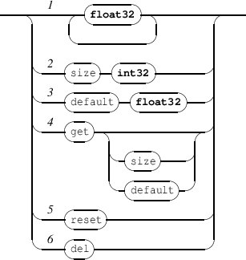

Chapter 8
Application messages
Application messages are accepted by the static OSC address /ITL.
8.1 Application management
-
-
ITLMsg 
- quit: requests the client application to quit.
- rootPath: rootPath of an INScore application is the default path where the application reads or writes
a file when a relative path is used for this file. The default value is the user home directory. Sending
the rootPath message without parameter resets the application path to its default value.
- preprocess: evaluates the input file script and print the result to the log window.
- mouse: hide or show the mouse pointer.
- defaultShow: changes the default show status for new objects.
The default defaultShow value is 1.
- load: loads a file previously saved using the save message (see section 2 p.10). Note that the
load operation appends the new objects to the existing scene. When necessary, it is the sender
responsibility to clear the scene before loading a file. URL are supported for the file path (see section
5.8 p.45);
- read: read a buffer that is expected to contain a valid inscore script.
- require: check that the current INScore version number is equal or greater to the number given
as argument. The version number is given as a float value. A message is associated to the require
message, which is triggered when the check fails. See section 16 p.157 for more details.
- compatibility: preserve INScore previous behavior. The argument corresponds to a version
number, INScore will preserve the corresponding behavior (objects scaling, default size, etc.).
- rate: changes the time task rate. Note that null values are ignored.
The default rate value is 10.
- time: sets the application current time. The time is expressed in milliseconds.
- ticks: sets the application current ticks count. The ticks count indicates the number of time tasks
performed by the application.
- hello: query the host IP number. The message is intended for ITL applications discovery. Answer to
the query has the following format:
IP inPort outPort errPort where IP is sent as a string and port numbers as integer
values.
- forwardingMsg: application support message forwading and filtering. See section 10 p.90.
EXAMPLE
when sending the message:
the application will answer with the following message:
/ITL 192.168.0.5 7000 7001 7003
when it runs on a host which IP number is 192.168.0.5 using the default port numbers.
8.2 Ports management
-
-
ITLPortsMsg 
Changes the UDP port numbers:
- port defines the listening port number,
- outport defines the port used to send replies to queries,
- errport defines the port used to send error messages.
The int32 parameter should be a positive value in the range [1024-49150].
The default port, outport and errport values are 7000, 7001 and 7002.
NOTE
Error messages are sent as a single string.
8.3 System support
-
-
ITLSystem 
- browse open the file given as parameter using the system default browser. The message supports
URLs that can be of type http:// , https:// or file:// . It supports also direct reference to a
local file (e.g. myfile.html) that is translated into file:// url using the application rootPath.
8.4 Application level queries
The application supports the get messages for its parameters (see section 6 p.52). In addition, it provides the
following messages to query version numbers.
-
-
ITLRequest 
- version: version number request.
- guido-version: Guido engine version number request.
- musicxml-version: MusicXML and Guido converter version numbers request. Returns "not
available" when the library is not found.
EXAMPLE
Querying INScore version:
will give the following as output:
8.5 Application static nodes
The application level provides the static nodes - stats, debug and log, available at /ITL/stats/ITL/debug and
/ITL/log to help debugging communication and INScore scripts design.
8.5.1 The ’stats’ nodes
-
-
ITLStats
- get gives the count of handled messages at OSC and UDP levels: the UDP count indicates the count
of messages received from the network, the OSC count includes the UDP count and the messages
received internally.
- reset resets the counters to zero. Note that querying the stats node increments at least the OSC the
counter.
EXAMPLE
Answer to a get message addressed to /ITL/stats
8.5.2 The ’debug’ nodes
The debug node is used to activate debugging information.
-
-
ITLdebug
- switch the debug mode ON or OFF. The parameter is interpreted as a boolean value. When in debug
mode, INScore sends verbose messages to the OSC error port for every message that can’t be correctly
handled. Debugging is ON by default.
EXAMPLE
Error messages generated on error port in debug mode:
error: incorrect OSC address: /ITL/stat
error: incorrect parameters: /ITL/scene/foo unknown 0.1
error: incorrect parameters: /ITL/scene/foo x "incorrectType"
8.5.3 The ’log’ nodes
The log node controls a console window that display all the messages sent to the OSC error port. Typical content is
given by the example above.
-
-
ITLLog
- show show or hides the console. The parameter is a boolean value.
- clear clear the console window.
- foreground put the console window to front.
- wrap control line wrapping of the console. The parameter is a boolean value.
- write write the arg list formatted as a string to the log window.
- save save the current log content to a file. The parameter is a file name. When expressed as a relative
path, the file is saved under the current application root path.
- level set the log level. Expected values are:
- 0 : no log
- 1 : log errors (default value)
- 2 : log errors and output of get messages
8.5.4 The ’plugins’ nodes
The plugins node controls the search path for plugins. See section 20 p.211 for more information on plugins and
search strategies.
-
-
ITLPlugin
- path add folder as a user path. The system will look for plugins in this folder first.
- reset clear the current user path.